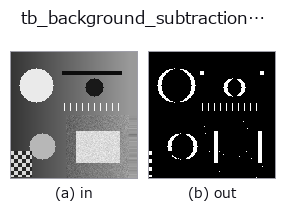

typed op• Data kinds: video → video
• Call: fullseye.apply(img, "tb_background_subtraction_window", a=0.5, b=0.5) (the 2-D model is one image plus two scalar knobs a,b∈[0,1])

*The figure is the actual output on a synthetic 128×128 input. Left: input, right: output. Point clouds are drawn as a top-down scatter (brightness = z), 1-D series as a line plot, volumes as the maximum-intensity projection along z, videos as the middle frame, complex images as magnitude; return values that are not pictures are shown as the values themselves.*
Sweeping knob a (0.1 / 0.5 / 0.9, the other knob at its default):
▸ tb_background_subtraction_window: knob a sweep (docs site)
Sweeping knob b (0.1 / 0.5 / 0.9, the other knob at its default):
▸ tb_background_subtraction_window: knob b sweep (docs site)
Stages (the ops that come before → this op, left to right):
▸ tb_background_subtraction_window: stages (docs site)
On other images (synthetic scene / photo / coins. Top row: inputs, bottom row: their outputs. Knobs at default):
▸ tb_background_subtraction_window: other inputs (docs site)
Motion (GIF: frames / views / slices in turn. The still figure is the complete one; the GIF is supplementary):
Causal window-median background → per-frame 0/1 foreground masks (T, H, W) (video).
For each frame t, the per-pixel median of the most recent window frames (max(0, t-window+1) .. t, including that frame itself) is taken as the background bg, and |frame_t - bg| > threshold is set to 1, everything else to 0. Future frames are not looked at (causal), so at the start the window is shorter by the missing frames.
• video: a (T, H, W) array, or a list of 2-D frames of the same shape and dtype. uint8/uint16 are scaled to [0, 1] by the dtype maximum; float is clipped to [0, 1] as is. Colour (T, H, W, C) is not accepted. NaN/Inf raise ValueError.
• window: int in 1–4096 (bool not allowed). With 1 the background = the frame itself, so all pixels are 0. For an even count, the median is the mean of the middle 2 values.
• threshold: in intensity units of [0, 1] (for uint8, converted as /255).
• Return value: (T, H, W) float64 of 0 / 1.
• Failure: ValueError (shape, dtype, range, non-finite).
Slowly moving objects melt into the background within window frames; in that case use running_gaussian_foreground (selective update) or exponential_foreground. If the background itself is needed, temporal_median_window.
The videostream op background_subtraction_window bridged into the 2-D evolution registry. The implementation is the same; only the calling convention is adapted to op(v, a, b). a sweeps window (default 5) and b sweeps threshold (default 0.1).
• Sample-data catalog (download URLs / licences) — 2-D uses skimage.data (BSD/public domain) plus synthetic images; 3-D lists download URLs for real data sources (Stanford, PDS, …).
• Operator provenance and references — the sources of the research/methods this op family came from.
The program below has been verified to run (same input as the figure). In Studio's help this block becomes buttons that load and run it on the spot.
img_to_video 0.50 0.50 tb_background_subtraction_window 0.50 0.50
▸ Load this pipeline · Load & run
The examples below call the underlying ledger op background_subtraction_window. This bridge op is the same implementation adapted to the fn(v, a, b) convention, so the behaviour carries over unchanged (only the call form differs).
• video_streaming — py -3.11 examples/video_streaming.py
video as input)identity · tb_temporal_bandpass · tb_temporal_band_power · tb_temporal_median_window · tb_moving_average_window · tb_frame_difference_causal · tb_exponential_background · tb_exponential_foreground
typed)tb_points_to_voxel · tb_estimate_point_normals · tb_iss_keypoints · tb_project_points · tb_render_point_depth · tb_statistical_outlier_removal · tb_radius_outlier_removal · tb_voxel_grid_downsample
*Provenance: ops.py — 2D operator registry. This per-op note is generated by tools/opdocs.py md (do not hand-edit).*
© 2026 Kazufumi Furuse — Fullseye operator documentation. Licensed under Apache-2.0.